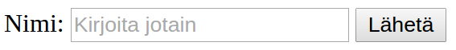

Selain & Palvelin
Aiheita tänään
Datan lähetys selaimelta palvelimelle
- Lomakkeet
- Ajax
Muuta aiheeseen liittyvää
- Evästeet
- Same-origin policy
- Cross-origin resource sharing
Selain-palvelin-kommunikaatio
Kaksi päätapaa lähettää dataa web-selaimelta palvelimelle
Lomakkeet
- Skriptitön vaihtoehto
- Kömpelöhkö
Ajax
- Mahdollisuus lähettää mitä tahansa dataa milloin tahansa
Myös sivun lataus esim. linkin klikkauksen myötä voidaan kai laskea datan lähetykseksi...
Lisäksi on WebSocketit
- Tilanteisiin joihin HTTP on liian hidas
Lomakkeet
<form action="/minne" method="GET">
<label for="nimi-input" >Nimi:</label>
<input id="nimi-input" type="text" name="nimi"
placeholder="Kirjoita jotain"></input>
<input type="submit" value="Lähetä"></input>
</form>
Erilaisia input typejä on HTML5:n myötä aika paljon:
button,checkbox,color,date,datetime,datetime-local,email,file,hidden,image,month,number,password,radio,range,reset,search,submit,tel,text,time,url,week- Selaintuki vaihtelee
Lomakkeen metodi
Lomakkeiden
method-attribuutiksi voidaan määritellä jokoGETtaiPOST- Lomakkeen lähettämiseen käytetään vastaavaa HTTP-metodia
GET: datan hakeminen (turvallinen metodi)POST: kaikki muu
Miksei
PUTtaiDELETE?- Ei mitään erityisen hyvää syytä muiden HTTP-metodien puuttumiseen (?)
- Joka tapauksessa ne puuttuvat HTML-lomakkeiden spesifikaatiosta eikä niitä ole toteutettu selaimissa
- Joudutaan tarvittaessa emuloimaan käyttämällä
POST:ia ja kertomalla jotenkin (esim. hidden-input-elementillä) että oikeasti kyseessä onkinPUT/DELETE. - Keskustelua aiheesta
GET-lomake
<form action="/minne" method="GET">
<input type="text" name="nimi"></input>
<input type="hidden" name="piilo" value="piilodata"></input>
<input type="submit" value="Lähetä"></input>
</form>tuottaa HTTP-pyynnön
GET /minne?nimi=jotain&piilo=piilodata HTTP/1.1
Host: example.com
...
(loput otsikkotiedot)
(ei runko-osaa)Käytännössä sama kuin avata URL-osoite
http://example.com/minne?nimi=jotain&piilo=piilodataGET-pyynnön koko on rajoitettu- Yleensä muutama kilotavu
- Raja riippuu selaimesta ja palvelimesta
POST-lomake
<form action="/minne" method="POST">
<input type="text" name="nimi"></input>
<input type="hidden" name="piilo" value="piilodata"></input>
<input type="submit" value="Lähetä"></input>
</form>tuottaa HTTP-pyynnön
POST /minne HTTP/1.1
Host: example.com
Content-Length: 27
Content-Type: application/x-www-form-urlencoded
...
(loput otsikkotiedot)
nimi=jotain&piilo=piilodataAjax
Termillä Ajax tarkoitetaan joukkoa teknologioita, joiden avulla voidaan ladata uutta sisältöä web-sivulle lataamatta koko sivua uudelleen
- Keskiössä
XMLHttpRequest-olio
- Keskiössä
XMLHttpRequest-olion avulla voidaan web-selaimelta tehdä ~mielivaltaisia HTTP-pyyntöjä palvelimelle
var xhr = new XMLHttpRequest();
xhr.open('put', '/resurssi/palvelimella');
xhr.setRequestHeader('Content-type', 'plain/text');
xhr.onreadystatechange = function() {
if(xhr.readyState === 4 && xhr.status === 200) {
alert(xhr.responseText);
}
}
xhr.send('moikkamoi');XMLHttpRequest
Ajax-pyynnöissä voidaan käyttää kaikkia HTTP-metodeja
GET,POST,PUT,DELETE, ...
Ja asettaa otsikkotietoja
- Tietyt otsikkotiedot
tosin on rajoitettu ainoastaan selaimen kirjoitettavaksi,
eikä niitä voi asettaa
XMLHttpRequest-olion kautta- Esim.
Host,Referer,User-Agent,Cookie, ... Sec--alkuiset
- Esim.
- Tietyt otsikkotiedot
tosin on rajoitettu ainoastaan selaimen kirjoitettavaksi,
eikä niitä voi asettaa
xhr.setRequestHeader('user-agent', 'salainen agentti');> Refused to set unsafe header "user-agent"Ajax-kirjastot
Ajax-kutsujen tekoa helpottamaan on olemassa erilaisia JavaScript-kirjastoja
Esim. jQuery
$.ajax('/jotain', {
type: 'GET'
}).done(function(data) {
alert(data);
});Evästeet
Eväste (cookie) on tapa, jolla HTTP:ssa voidaan säilöä pyynnöstä toiseen säilyvää tietoa
Eväste muodostuu nimi-arvo-pareista
Palvelin asettaa evästeen vastauksessaan
Set-Cookie-otsikko
Asiakas lähettää evästeen tulevissa pyynnöissään
Cookie-otsikko
Tyypillinen käyttötapa on asettaa ns. istuntotunniste (session token)
- istuntotunniste luodaan käyttäjän kirjautuessa
- sen avulla palvelin tietää kuka HTTP-pyynnön teki
Set-Cookie ja Cookie
- Osoitteesta
http://www.example.comtuleva vastaus
HTTP/1.1 200 OK
...
Set-Cookie: n=5
Set-Cookie: foo=bar
...- Asiakas liittää jatkossa evästeet ko. osoitteeseen lähettämiinsä pyyntöihin
GET /kuva.png HTTP/1.1
...
Cookie: n=5; foo=bar
...Evästeen käyttäytyminen
Oletusarvoisesti
- eväste säilötään istunnon päättymiseen (= selaimen sulkemiseen) asti
- eväste liitetään pyyntöihin, jotka tehdään osoitteeseen, jossa
- domain on sama kuin alkuperäisessä pyynnössä, ja
- polku (path) on sama kuin alkuperäisessä pyynnössä tai sen alipolku
Käyttäytymistä voidaan muokata evästeen attribuuteilla
Set-Cookie: NIMI=ARVO; attr1; attr2; ...Evästeen attribuutit
Expires=<päiväys>- säilytä evästettä tähän asti
Max-Age=<sekunnit>- säilytä evästettä vain tämä aika, kumoaa Expires-attribuutin
Domain=<domain1,domain2,...>- lähetä eväste näihin domaineihin tehtäviin pyyntöihin
Path=<polku>- lähetä eväste vain tähän polkuun ja sen alipolkuihin
HttpOnly- vain HTTP-viesteihin, ei näy mm. selaimen JavaScript-koodissa
Secure- lähetetään vain "turvallisen" yhteyden yli, käytännössä HTTPS
Evästeet ja JavaScript
Web-selain lähettää evästeet automaattisesti
- Web-sovellus ei voi asettaa
Cookieotsikkotietoa
- Web-sovellus ei voi asettaa
Jos evästeessä ei ole
HttpOnly-attribuuttia, niitä voidaan kuitenkin lukea ja kirjoittaa JavaScriptillä
var vanha = document.cookie;document.cookie="uusi=evaste";- harvoin tälle kuitenkaan on tarvetta...
Esimerkki
Olen kirjautunut sivulle
webbimaili.fi, joka onlisännyt autentikointitiedot sisältävän evästeenKäyn samalla selaimella osoitteessa
pahis.org, jossa on seuraava skripti
$.get('https://webbimaili.fi/kaikki.html').done(handleResponse);HTTP-viestin mukana kulkevat evästeet voisivat huijata
webbimaili.fi:n luulemaan, että HTTP-pyyntö tulee minulta, ja näyttää pahikselle kaikki sähköpostiniMutta: pahiksen suunnitelma ei kuitenkaan onnistu näin helposti, sillä web-selain rajoittaa eri originien välisiä HTTP-pyyntöjä
- Rajoituksesta käytetään nimitystä same-origin policy
Same-origin policy
Same-origin policy on web-selaimen tietoturvamekanismi, joka rajoittaa eri originien välistä kommunikaatiota
Origin = protokolla + host + portti
Esim. verrataan URI:a
http://www.tut.fi/fi
| URL | Same origin? | Syy |
|---|---|---|
http:/www.tut.fi/en/?x=1 |
Kyllä | |
https:/www.tut.fi |
Ei | Eri protokolla |
http:/www.tut.fi:8000 |
Ei | Eri portti |
http:/wiki.tut.fi |
Ei | Eri host |
Same-origin policy
Same-origin policy koskee
- DOM:n käsittelyä
- XMLHttpRequest-pyyntöjä
Same-origin policy ei koske
- Lomakkeita (form)
- Sivulle liitettyjä elementtejä, jotka lataavat sisältöään muualta
- Esim:
<script src="http://eriorigin1.com/skript.js"></script>
<link rel="http://eriorigin2.com/style.css"></script>
<img src="http://eriorigin3.com/kuva.png"></script>Same-origin policy ja DOM
Web-sivun JavaScript-koodi saa käsitellä vain samasta originista ladattujen sivujen DOM:ia
Esim. sivulla
https://www.tut.fi/fioleva seuraavanlainen uuden selainikkunan avaava ja sitä muokkaava JavaScript-koodi onnistuu:
var w = open("http://www.tut.fi");
// Kun sivu on latautunut...
w.document.body.innerHTML = "<h1>Moi</h1>";- Mutta seuraava ei:
var w = open("http://www.google.fi");
// Kun sivu on latautunut...
w.document.body.innerHTML = "<h1>Moi</h1>";> SecurityError: Blocked a frame with origin "http://www.tut.fi"
from accessing a cross-origin frame.Same-origin policy ja XMLHttpRequest
Oletuksena Ajax-kutsuja voi tehdä vain samaan originiin
Esim. originissa
http://www.tut.fisuoritettava seuraava Ajax-pyyntö ei onnistu
$.get('http://google.com/');> XMLHttpRequest cannot load http://google.com/.
No 'Access-Control-Allow-Origin' header is present on the requested
resource. Origin 'http://www.tut.fi' is therefore not allowed access.HUOM: tämä pyyntö kävi kuitenkin google.com:n palvelimella asti
Same-origin policy ei estä viestin lähetystä, vain vastauksen lukemisen
Same-origin policyn kiertäminen
Usein on kuitenkin tarvetta tehdä HTTP-pyyntöjä selaimesta muihin origineihin
Tähän on useita tapoja. Esim:
- Pyynnön kierrättäminen oman palvelimen kautta
- JSONP (JSON with Padding)
- CORS (Cross-Origin Resource Sharing)
Kaksi jälkimmäistä vaatii yhteistyötä siltä palvelimelta, josta resurssi haetaan
Ajax-pyynnön kierrättäminen
- Same-origin policy on vain selaimen ominaisuus
- Web-palvelimet voivat tehdä mitä pyyntöjä haluavat

JSONP
- JSON with Padding (JSONP) on kikka, jolla voidaan lukea dataa toisesta originista
function jokuFunktio(data) {
// Dataa vastaanotettu...
}
$(document.body).append('<script src=' +
'"http://eriorigin.fi/dataa.js' +
'?callback=jokuFunktio"></script>');http://eriorigin.fi/dataa.js?callback=jokuFunktiovastaa lähettämällä JavaScript-tiedoston joka kutsuucallback-parametrina annettua funktiota- funktion parametrina varsinainen data
jokuFunktio({jotain: "dataa"});- JSONP ei ole enää kovin tarpeellinen CORS:in yleistymisen myötä ->
CORS
Cross-Origin Resource Sharing (CORS) on tapa, jolla HTTP-palvelin voi eksplisiittisesti sallia toisesta originista tulevia pyyntöjä
Esim. Ajax-pyyntö
- originista
http://www.tut.fi - originiin
http://eri.com
- originista
Pyynnössä otsikko
Origin: http://www.tut.fi- ja
http://eri.com:n vastauksessa
Access-Control-Allow-Origin: http://www.tut.fi- Tällöin selain sallii
http://www.tut.fi-sivun lukea vastauksen data
CORS: Simple & Preflighted Requests
CORS:n näkökulmasta on kahdenlaisia HTTP-pyyntöjä
- Yksinkertaiset (simple)
- Ei-yksinkertaiset (preflighted)
Yksinkertaiset pyynnöt
- Metodi joko
GET,HEADtaiPOST - Lisäksi rajoituksia otsikkotietoihin
- Tällaisia pyyntöjä voi web-sovellus muutenkin lähettää esimerkiksi lomakkeilla
- Metodi joko
Palvelin voi hyväksyä yksinkertaisen pyynnön palauttamalla vastauksen jossa on otsikkotieto
Access-Control-Allow-Origin: <pyynnön Origin>tai
Access-Control-Allow-Origin: *CORS: Preflighted Request
CORS:n ei-yksinkertaisille pyynnöille pitää tehdä preflight-vaihe
Siinä lähetetään ensin
OPTIONS-pyyntö, jossa kysytään lupaa ei-yksinkertaisen pyynnön suoritukseen
OPTIONS /resurssi HTTP/1.1
Host: eriorigin.com
...
Origin: http://www.tut.fi
Access-Control-Request-Methods: PUT, DELETE
Access-Control-Request-Headers: Content-Type, X-Foo, X-Bar- johon palvelin vastaa
HTTP/1.1 200 OK
...
Access-Control-Allow-Origin: http://www.tut.fi
Access-Control-Allow-Methods: PUT, DELETE
Access-Control-Allow-Headers: Content-Type, X-Foo, X-Bar- Tämän jälkeen selain voi lähettää varsinaisen HTTP-pyynnön
Palvelimelta selaimelle
HTTP:ssä kommunikoinnin aloittaa aina asiakas
Joskus on kuitenkin tarvetta mallille, jossa palvelin voi lähettää dataa web-selaimelle silloin kun palvelin haluaa
- Esim. pikaviestisovellus
Yksinkertaisin tapa on, että asiakas tekee pyyntöjä tietyin väliajoin, eli ns. pollaa
setInterval(function() {
$.get('/oliskoJotainKiinnostavaa.json', lueVastaus);
}, 1000);- Mutta parempiakin tapoja on ->
- Long-polling
- Streaming
- WebSocket (ei HTTP)
Long-polling
HTTP Long-polling on nimitys kikalle, jolla voidaan ikään kuin aloittaa HTTP-pyyntö palvelimelta päin
- Asiakas tekee HTTP-pyynnön jolla se ilmoittautuu kuuntelemaan palvelinta
Toiminta:
- Asiakas tekee HTTP-pyynnön
- Palvelin ei vastaakaan heti vaan jättää pyynnön "roikkumaan"
- Vasta kun palvelimella on jotain dataa lähetettävänä, vastaa se roikkumassa olevaan pyyntöön
- Siirry kohtaan 1.
HTTP Streaming on samantapainen tekniikka, mutta siinä HTTP-vastausta ei katkaista kohdassa 3 vaan saman vastauksen sisällä voidaan lähettää useampia viestejä
Transfer-Encoding: chunked
Ongelmia
Ongelmana mainituissa tekniikoissa (Long-polling ja Streaming) on että ne rakentuvat HTTP:n päälle
HTTP:tä ei ole tarkoitettu tällaiseen
- Se on asiakas-palvelin pyyntö-vastaus -protokolla
HTTP-viestit voivat kulkea usean välikäden kautta (välimuistit, proxyt, palomuurit, ...) jotka voivat aiheuttaa ongelmia
Välikädet eivät voi tietää että kyseessä on long-polling eikä liian kauan kestävä HTTP-pyyntö
HTTP:ssä ei ole "flush"-mekanismia, joten mikään ei takaa että Streamingin lähettämä osittainen viesti päätyisi perille eikä jää jonkun välikäden puskuriin
WebSocket-protokollassa ei ole näitä ongelmia ->
WebSocket
WebSocket on protokolla web-selaimen ja palvelimen väliseen tehokkaaseen kommunikointiin
Käyttökelpoinen erityisesti erilaisissa reaaliaikasovelluksissa
- Esim. chatit, moninpelit
Kaksisuuntainen
- Sekä selain että palvelin voi lähettää dataa milloin haluaa
Same-origin policy -rajoitus ei koske WebSocket-protokollaa
Ei muuta tekemistä HTTP:n kanssa kuin että "kättely" (handshake) tehdään HTTP:n avulla
WebSocket handshake
- Pyyntö
GET /chat HTTP/1.1
Host: server.example.com
Upgrade: websocket
Connection: Upgrade
Sec-WebSocket-Key: x3JJHMbDL1EzLkh9GBhXDw==
Sec-WebSocket-Protocol: chat, superchat
Sec-WebSocket-Version: 13
Origin: http://example.com- Vastaus
HTTP/1.1 101 Switching Protocols
Upgrade: websocket
Connection: Upgrade
Sec-WebSocket-Accept: HSmrc0sMlYUkAGmm5OPpG2HaGWk=
Sec-WebSocket-Protocol: chat- Selain hoitaa tämän automaattisesti käytettäessä
WebSocket-rajapintaa
WebSocket JavaScript-rajapinta
- WebSocketia tukevat selaimet
(kaikki uusimmat)
tarjoavat olion
WebSocket, jolla voidaan luoda WebSocket-yhteyksiä
var socket = new WebSocket('ws://example.com/foo', 'chat');
socket.onopen = function () {
setInterval(function() {
if (socket.bufferedAmount == 0)
socket.send(getUpdateData());
}, 50);
};
socket.onmessage = function (event) {
dataaTuli(event.data);
};- Varsinainen protokolla (esimerkissä
chat) jää sovelluksen määriteltäväksi
Loppuhuomio
Kaikki läpi käydyt kommunikointitavat (pl. WebSocket) lähettävät ja vastaanottavat HTTP-viestejä
Palvelin ei edes välttämättä voi mitenkään tietää onko sen vastaanottama HTTP-pyyntö peräisin
- lomakkeen lähetyksestä
- Ajax-kutsusta
- HTML:n
<img src="..."></img>tms. elementin latauksesta - linkin klikkauksesta
- URL:n syöttämisestä selaimen URL-kenttään
- vai jostain muualta kuin web-selaimesta...